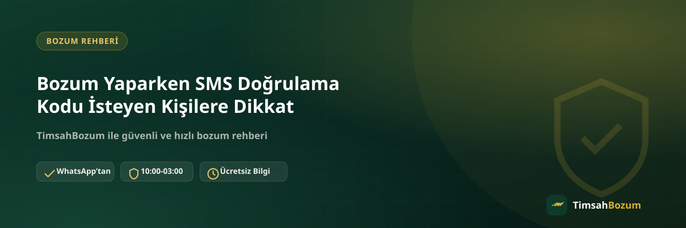

Bozum işlemi sırasında bazen "işlemi tamamlamak için hattına gelen kodu paylaş" gibi bir talepler duyulabiliyor. Bu tür bir istek, aslında bozum sürecinin bir parçası değil, hattına veya hesabına erişim sağlamaya yönelik bir dolandırıcılık girişiminin işareti. Bu yazıda SMS doğrulama kodunun bozum sürecinde neden yeri olmadığını, böyle bir talep gelirse ne yapman gerektiğini ve resmi hattımızı nasıl ayırt edeceğini anlatıyoruz.
SMS Doğrulama Kodu Neden Bozum Sürecinin Bir Parçası Değildir?
Bozum işlemi, kod veya bakiye bilginin paylaşılması, oranın teyit edilmesi ve onay sonrası ödemenin yapılmasından oluşan basit bir süreç. Bu adımların hiçbirinde hattına gelen bir doğrulama kodunun bilinmesine ihtiyaç yok, çünkü işlem senin hesabına veya hattına erişim gerektirmiyor. Bu yüzden süreç sırasında böyle bir kod istenmesi, normal akışın dışında bir durum.
Bozum İşleminde Hangi Bilgiler Gerçekten İstenir?
Kod tabanlı bir hizmet bozduruyorsan (Razer Gold, iTunes) paylaşman gereken tek şey kodun kendisi. Bakiye tabanlı bir hizmet bozduruyorsan (Pokus, Paycell, mobil ödeme) ise güncel bakiyeni gösteren okunaklı bir ekran görüntüsü yeterli. Bunun dışında üyelik, form doldurma, kimlik belgesi veya hesabına giriş yapılması istenmiyor; dolayısıyla bir SMS kodunun da bu listede yeri yok.
SMS Doğrulama Kodu İstenmesi Neden Bir Uyarı İşaretidir?
Telefonuna gelen doğrulama kodları genellikle bir hesaba giriş yapmak, şifre sıfırlamak veya bir işlemi onaylamak için kullanılır. Birisi bu kodu senden istiyorsa, aslında senin adına bir hesaba erişmeye veya bir işlemi senin onayınmış gibi göstermeye çalışıyor olabilir. Bozum işleminin böyle bir onaya ihtiyacı olmadığı için, bu talep işlemle değil başka bir amaçla ilgili.
Böyle Bir Talep Gelirse Ne Yapmalısın?
Sana SMS doğrulama kodu isteyen bir mesaj ulaşırsa kodu hiçbir şekilde paylaşma ve işlemi orada durdur. Talebin gerçekten TimsahBozum'dan gelip gelmediğini merak ediyorsan resmi WhatsApp hattımızdan (+90 543 887 21 71) teyit isteyebilirsin. Gerçek bir bozum işleminde bu adımı atlamak seni geciktirmez, çünkü zaten sürecin bir parçası değildir.
Dolandırıcılar Bu Yöntemi Neden Kullanır?
SMS doğrulama kodu istemek, dolandırıcıların bir hesaba veya numaraya yetkisiz erişim sağlamak için sık başvurduğu bir yöntem. "Bozum işlemini tamamlamak için" gibi bir gerekçe, kurbanın güvenini kazanıp kodu paylaşmasını kolaylaştırıyor. Bu yüzden gerekçe ne kadar makul görünürse görünsün, kod paylaşımı istenen her durumda temkinli yaklaşmak gerekiyor.
Resmi Hattımızdan Gelen Bir Mesaj Olduğunu Nasıl Anlarsın?
Tüm bozum işlemlerimiz yalnızca +90 543 887 21 71 numaralı resmi WhatsApp hattından yürür. Farklı bir numaradan veya Instagram DM gibi başka bir platformdan "TimsahBozum" adına ulaşıldığını düşünüyorsan, bilgi paylaşmadan önce bu numaradan doğrudan teyit almalısın. Resmi hat dışından gelen hiçbir talep bizim adımıza yapılmış sayılmaz.
SMS Kodunu Paylaşmanın Riskleri Nelerdir?
Doğrulama kodunu bir başkasıyla paylaştığında, o kişi bu kodu kullanarak hattına bağlı bir hesaba giriş yapabilir, bir işlemi onaylayabilir veya numaranla ilgili bir değişiklik yapabilir. Bu, bozdurmak istediğin kod veya bakiyeyle hiçbir ilgisi olmayan, tamamen ayrı bir risk. Kod bir kez paylaşıldıktan sonra geri alınamaz, bu yüzden en güvenli yaklaşım kodu hiç kimseyle paylaşmamak.
Yanlışlıkla Kod Paylaştıysan Ne Yapmalısın?
Doğrulama kodunu yanlışlıkla paylaştıysan hızlı hareket etmek önemli. İlgili hesabın veya hattın bağlı olduğu operatöre ya da servise ulaşıp durumu bildirmen, gerekiyorsa şifreni değiştirmen yetkisiz kullanımı önlemenin en pratik yolu. Bu adımı, kodu paylaştığını fark eder etmez atmak, olası zararı sınırlamak için önemli.
SMS Kodu İstemek ile Oran Teyidi Aynı Şey mi?
Bozum sürecinde karşına çıkan tek "onay" adımı, güncel oranın WhatsApp üzerinden teyit edilmesi. Bu teyit, sana gönderilen bir mesaja "evet, bu oranla devam etmek istiyorum" demenden ibaret; hiçbir şekilde telefonuna gelen bir kodu geri yazmanı gerektirmiyor. Bu iki adımı birbirine karıştırmamak önemli, çünkü dolandırıcılar bazen "oranı onaylamak için" gibi bir gerekçeyle de SMS kodu isteyebiliyor. Oran teyidi sadece sözlü veya yazılı bir onaydır, bir doğrulama kodu paylaşımı değildir.
Bu Talep Sadece Bozum İşleminde mi Karşına Çıkar?
SMS doğrulama kodu istemek, aslında yalnızca bozum işlemine özgü bir dolandırıcılık yöntemi değil; banka işlemlerinden sosyal medya hesap ele geçirmelerine kadar birçok alanda karşılaşılan yaygın bir taktik. Bu yüzden "bozum işlemi tamamlanacak, kodu gönder" gibi bir mesaj aldığında, bunu genel olarak SMS kodu talep eden dolandırıcılık girişimlerinden biri gibi değerlendirip aynı temkinle yaklaşmak en doğrusu. Hangi gerekçeyle istenirse istensin, telefonuna gelen bir doğrulama kodunu üçüncü bir kişiyle paylaşmamak genel bir güvenlik kuralı olarak kalıcı.
Bu Konu Diğer Bozum Güvenlik Kurallarıyla Nasıl İlişkili?
SMS doğrulama kodu istenmemesi, bozum sürecinin genel güvenlik mantığının bir parçası: işlem boyunca hesabına, hattına veya bir uygulamana erişim istenmiyor, sadece kod ya da bakiye bilgisi paylaşılıyor. Mobil ödeme bozdurma gibi bakiye tabanlı hizmetlerde de aynı kural geçerli; hiçbir aşamada hesabına giriş yapılması veya bir doğrulama kodu paylaşılması gerekmiyor.
İlgili Yazılar
- Bozum İşlemi Yaparken Nelere Dikkat Etmeli
- Bozum İşleminde Hesabıma Erişim Veriyor muyum?
- Bozum Yaparken WhatsApp Dışında Bir Platform Güvenilir mi?
Şüpheli bir talep aldıysan ya da işlemini başlatmak istiyorsan WhatsApp hattımıza yazarak durumu teyit edebilirsin.